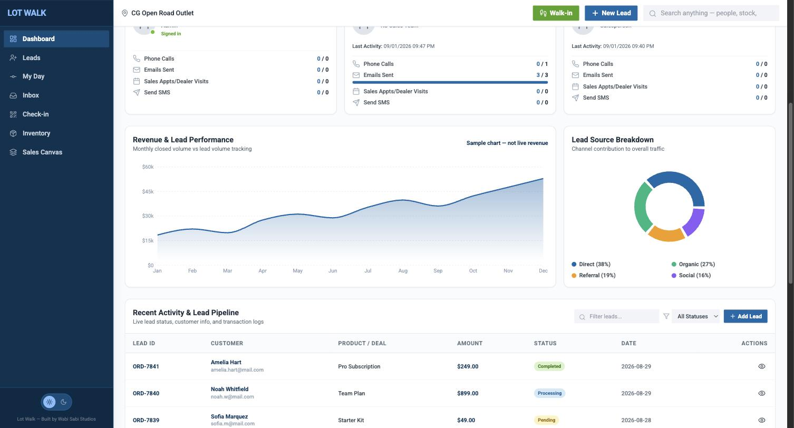
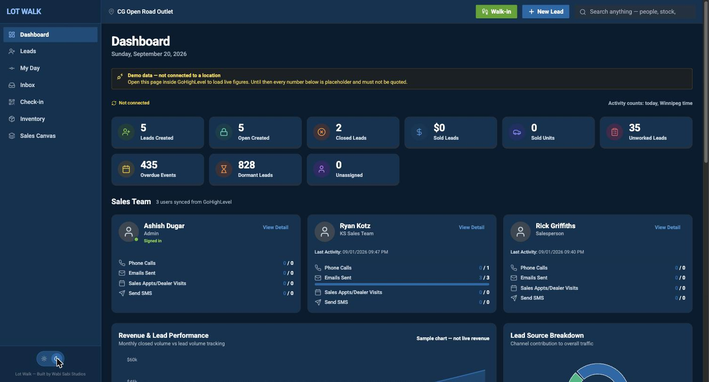
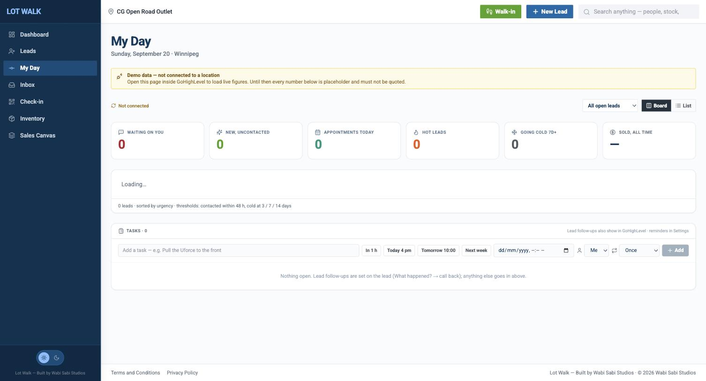
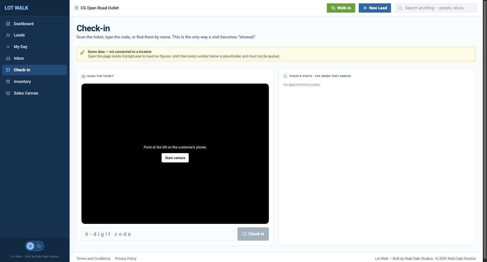
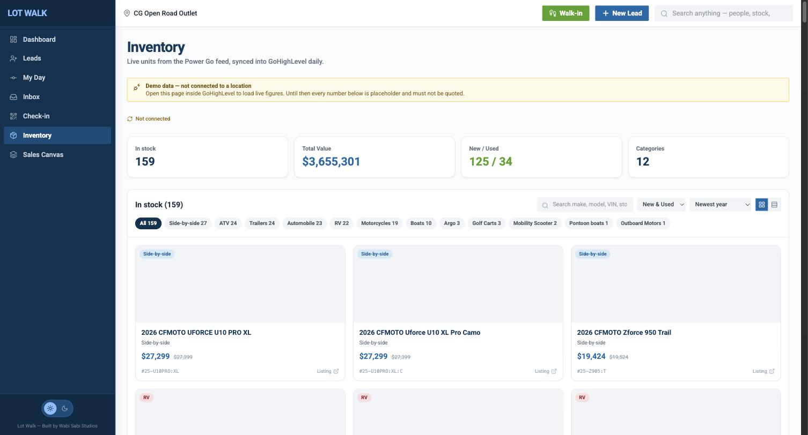
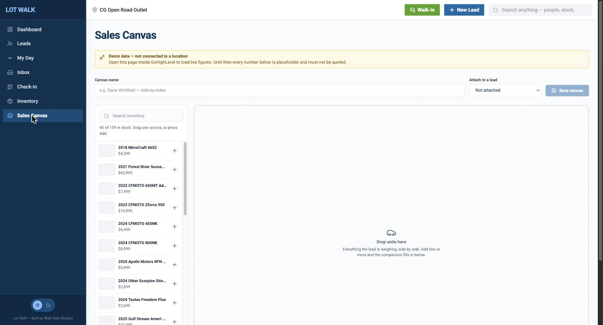

Urgency first. Zero retraining.
Default view. Leads sorted by what goes cold. Seven deal steps, matched to GHL pipelines — the workflow reps already know. Advance a step with a note in one click.
Real-time leads, live inventory, walk-in check-ins, and AI drafts — embedded inside GoHighLevel. Live on a Winnipeg floor, replacing the CRM two vendors said would take six months to leave.

Nine KPI tiles. Per-rep cards. Charts. Then the work: My Day, Inbox, Check-in, Inventory, Sales Canvas. Managers see the whole team. A salesperson sees their own pipeline.
Swipe the reel →






Default view. Leads sorted by what goes cold. Seven deal steps, matched to GHL pipelines — the workflow reps already know. Advance a step with a note in one click.
Drag a deal through stages. Search that looks inside notes, texts, emails, and the archived history from your old CRM.
Sortable spreadsheet for the GM who still thinks in columns. Bulk transfer between reps when the roster changes.
Contacts, Notes, Tasks, Appointments, Texts, Emails, Calls. Inbox is Unreplied / Unread / All — texts, email, and calls in one split pane. Inbound mail via inbound.lotwalk.app (Resend), not Zapier.
DeepSeek writes a one-line summary and a suggested reply. The rep reads, edits, sends. Turn AI off and intake, assignment, inventory, and reports still run.
New leads, age timer, gone quiet, read/unread, old-leads parking lot. Failed-text detection flags a bounce before a rep wastes the morning on it.
New inquiries distribute across the roster. Configurable per location, inside Settings, inside GHL.
Private Marketplace app. Webhooks sync contacts, pipeline changes, and conversations. No second login for the rep.
Supabase, 55 migrations, Edge Functions for webhooks and AI. Pro-tier in production. Canada Central when PIPEDA is the requirement.
Push to deploy. SPA at the edge. Zero-downtime on every ship.
Every lead, every thread — on your servers. Not in ours.
We build inside your GHL. If we leave, the pipeline stays. AI never messages a buyer on its own.
A 30-minute call. Walk us through how a Kijiji lead reaches a rep. We’ll tell you what we’d cut first.
Book the 30-minute call →NO SIX-MONTH MIGRATION THEATRE. · Dealership OS →